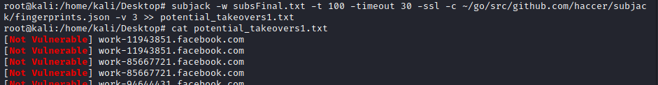

METHODOLOGY
Zseano Methodology advise1.
Amass(
https://github.com/OWASP/Amass):
Check the subchapter subdomain
enumeration → Amass
mixture of passive, active and will even do alterations of discovered subdomains
amass enum -brute -active -d domain.com -o subs.txt
2.
Assetfinder (
https://github.com/tomnomnom/assetfinder)
Check
subchapter subdomain enumeration → assetfinder
assetfinder domain.com >> subs.txt
3.
Subfinder (
https://github.com/projectdiscovery/subfinder)
Check subchapter subdomain enumeration → subfinder
subfinder -d domain.com >> subs.txt
3. grep only unique lines in the file
sort -u subs.txt > subsFinal.txt
5.
httprobe(
https://github.com/tomnomnom/httprobe):
find working/alive
http and https servers
cat subsFinal.txt | httprobe -p http:81 -p http:3000 -p https:3000 -p http:3001 -p https:3001 -p http:8000 -p http:8080 -p https:8443 -c 50 | tee online-domains.txt
◇
anew(
https://github.com/tomnomnom/anew):
if we have already a list
of working http/https servers and we want to find new ones that we have on another list we can:
cat new-output.txt | anew old-output.txt |
httprobe -p
http:81 -p http:3000 -p https:3000 -p http:3001 -p https:3001 -p http:8000 -p
http:8080 -p https:8443 -c 50
6. dnsgen(https://github.com/ProjectAnte/dnsgen):
tool that generates a combination of domain
names from the provided input. Combinations are created based on wordlist.
cat subsFinal.txt | dnsgen - | httprobe
7. GoWitness
Check the
subchapter
about it For visual inspection using screenshots of the pages
gowitness file -f online-domains.txt --threads 3
8. Subjack(
https://github.com/haccer/subjack)
Check the
subchapter
about it.
Tool that help us to check for subdomain takeover vulnerability. The subdomains that we will
scan, will be also the ones NOT alive.
$ go get github.com/haccer/subjack
”
$ subjack -w subdomainsToScan.txt -t 100 -timeout 30 -ssl -c ~/go/src/github.com/haccer/subjack/fingerprints.json -v 3 >> potential_takeovers.txt
$ cat potential_takeovers.txt
9.
ffuf(https://github.com/ffuf/ffuf):
Bruteforce(fuzzing) to find directories and files
ffuf -ac -v -u https://domain/FUZZ -w wordlist.txt
◇ we need to use the FUZZ keyword at the end of URL instead of the directory/file
◇ Good basic
wordlists by
Seclists are:
▪
https://github.com/danielmiessler/SecLists/blob/master/Discovery/Web-Content/directory-list-2.3-big.txt
▪ https://github.com/danielmiessler/SecLists/blob/master/Discovery/Web-Content/directory-list-2.3-medium.txt
▪
https://github.com/danielmiessler/SecLists/blob/master/Discovery/Web-Content/directory-list-2.3-big.txt
To know how to use it:
https://codingo.io/tools/ffuf/bounty/2020/09/17/everything-you-need-to-know-about-ffuf.html#what-is-directory-brute-forcing
Bibliography:https://www.bugbountyhunter.com/methodology/zseanos-methodology.pdf